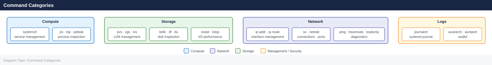

Linux — CLI Reference¶
Commands, syntax, and quick reference.
Commonly used Linux administration commands, grouped by category. Applies to RHEL 8/9 and Ubuntu 22.04 unless noted.
Before you begin¶
- Access: root or sudo-capable account on target hosts
- Timing: safe to run during business hours unless a step is marked ⚠ (causes interruption)
- Dependencies: no active upgrades or migrations on the same infrastructure
- Logging: capture command output — paste into the change record on completion
Command Categories¶

Process Management¶
ps aux # All processes
ps aux --sort=-%cpu | head -15 # Top CPU consumers
ps aux --sort=-%mem | head -15 # Top memory consumers
ps -eLf | sort -k4 -rn | head -20 # Per-thread CPU
kill -9 <PID> # Force kill
pkill -f <process-name> # Kill by name
nohup <command> & # Run detached
jobs # List background jobs
USER PID %CPU %MEM VSZ RSS TTY STAT START TIME COMMAND
root 1 0.0 0.2 19232 9140 ? Ss 08:14 0:02 /sbin/init
root 412 0.1 0.8 55280 32456 ? Ss 08:14 0:15 /lib/systemd/systemd-journald
postgres 2847 2.3 5.6 892456 228904 ? Ss 09:22 1:47 /usr/lib/postgresql/13/bin/postgres
nginx 3102 0.4 1.2 145680 48920 ? S 09:45 0:08 nginx: worker process
root 4521 8.7 12.1 2456780 492560 ? Sl 10:01 3:42 java -Xmx2g -jar app.jar
ubuntu 5634 0.0 0.1 21544 4128 pts/0 Ss 10:15 0:00 -bash
ubuntu 6789 1.2 0.3 98765 12340 pts/0 S+ 10:22 0:05 python3 data_processor.py
nohup: ignoring input and appending output to 'nohup.out'
[1] 7234
[1]+ Running nohup long_running_task.sh &
Common errors
bash: kill: (12345): No such process — Verify the PID exists with ps aux | grep <PID> before attempting to kill it.
pkill: invalid option -- 'f' — Use pkill -f on Linux systems; on some BSD variants use pgrep -f to find processes first.
nohup: failed to run command '<command>': No such file or directory — Ensure the command path is correct and the executable exists in your PATH or provide the full absolute path.
Disk and Filesystem¶
lsblk -o NAME,SIZE,TYPE,MOUNTPOINT,FSTYPE
df -h # Filesystem usage
df -i # Inode usage
du -sh <path> # Directory size
du -sh /* 2>/dev/null | sort -h # Find large directories
fdisk -l /dev/sdb # Partition table
parted /dev/sdb print
mount /dev/vg/lv /mnt/point
umount /mnt/point
NAME SIZE TYPE MOUNTPOINT FSTYPE
sda 200G disk
├─sda1 512M part /boot ext4
├─sda2 199G part / ext4
└─sda3 512M part [SWAP] swap
sdb 1.8T disk
└─sdb1 1.8T part /data ext4
nvme0n1 500G disk
└─nvme0n1p1 500G part /var ext4
Filesystem Size Used Avail Use% Mounted on
/dev/sda2 199G 145G 54G 73% /
/dev/sda1 512M 128M 384M 25% /boot
/dev/sdb1 1.8T 1.2T 600G 67% /data
tmpfs 7.8G 0 7.8G 0% /dev/shm
Filesystem Inodes IUsed IFree IUse% Mounted on
/dev/sda2 12M 2.1M 9.9M 18% /
/dev/sda1 32K 312 31K 1% /boot
/dev/sdb1 120M 45M 75M 38% /data
4.2G /var
3.8G /home
2.1G /opt
1.5G /usr
892M /tmp
Disk /dev/sdb: 1863.0 GiB, 2000398934016 bytes, 3907029168 sectors
Disk model: QEMU HARDDISK
Units: sectors of 1 * 512 = 512 bytes
Sector size (logical/physical): 512 bytes / 512 bytes
I/O size (minimum/optimal): 512 bytes / 512 bytes
Disklabel type: dos
Disk identifier: 0x5a3c2e1f
Device Boot Start End Sectors Size Id Type
/dev/sdb1 2048 3907029167 3907027120 1.8T 83 Linux
Model: /dev/sdb
Disk /dev/sdb: 1863GB
Sector size (logical/physical): 512B/512B
Partition Table: msdos
Number Start End Size Type File system Flags
1 1049kB 1863GB 1863GB primary ext4
(no output — command completes silently)
(no output — command completes silently)
Common errors
mount: /mnt/point: mount point does not exist. — Create the mount point directory with mkdir -p /mnt/point before mounting.
umount: /mnt/point: target is busy. — Close all open files or processes accessing the mount point with lsof /mnt/point and kill them, then retry umount.
fdisk: cannot open /dev/sdb: Permission denied — Run the command with sudo or as the root user.
LVM¶
pvs / pvdisplay # Physical volumes
vgs / vgdisplay # Volume groups
lvs / lvdisplay # Logical volumes
pvcreate /dev/sdb
vgcreate vg_name /dev/sdb
lvcreate -L 50G -n lv_name vg_name
lvextend -L +20G /dev/vg/lv
xfs_growfs /dev/vg/lv # Grow XFS online
resize2fs /dev/vg/lv # Grow ext4 online
PV VG Fmt Attr PSize PFree
/dev/sda2 vg0 lvm2 a-- 279.00g 4.00g
/dev/sdb lvm2 --- 500.00g 500.00g
VG Name #PV #LV #SN Attr VSize VFree
vg0 1 3 0 wz--n- 279.00g 4.00g
vg_name 1 0 0 wz--n- 500.00g 500.00g
LV VG Attr LSize Pool Origin Data% Meta% Move Log Cpy%Sync Convert
lv_data vg0 -wi-ao---- 100.00g
lv_swap vg0 -wi-ao---- 8.00g
lv_name vg_name -wi-a----- 50.00g
Physical volume "/dev/sdb" successfully created with id 8f4a2c91-7d3e-4a5b-9c2e-1b5f8a3d6e9c
Volume group "vg_name" successfully created
Logical volume "lv_name" created.
Size of logical volume vg_name/lv_name changed from 50.00 GiB (12800 extents) to 70.00 GiB (17920 extents).
meta-data=/dev/mapper/vg-lv isize=512 agcount=4, agsize=3276800 blks
data blocks changed from 13107200 to 18350080
Common errors
Device /dev/sdb not found — Verify the device exists with lsblk and use the correct device path.
Physical volume "/dev/sdb" already in use — Run pvremove /dev/sdb first or use a different device.
No space left on device — Ensure the volume group has sufficient free extents with vgdisplay vg_name.
Networking¶
ip -br addr # Interface summary
ip addr show <iface>
ip route show
ip route get <destination>
ip link set <iface> up/down
ss -tulnp # Listening ports
ss -tnp state established # Active connections
ss -s # Connection summary
ethtool <iface> # Physical link info
nmcli connection show
nmcli device status
lo UNKNOWN 127.0.0.1/8 ::1/128
eth0 UP 192.168.1.45/24 fe80::a00:27ff:fe4e:66a1/64
eth1 DOWN 10.0.0.0/24
docker0 UP 172.17.0.1/24
default via 192.168.1.1 dev eth0 proto kernel scope link src 192.168.1.45
10.0.0.0/24 dev eth1 proto kernel scope link src 10.0.0.1
172.17.0.0/16 dev docker0 proto kernel scope link src 172.17.0.1
PROT RECV-Q SEND-Q LOCAL ADDRESS FOREIGN ADDRESS STATE PID/PROGRAM NAME
tcp 0 0 0.0.0.0:22 0.0.0.0:* LISTEN 1247/sshd
tcp 0 0 127.0.0.1:5432 0.0.0.0:* LISTEN 2891/postgres
tcp 0 0 0.0.0.0:80 0.0.0.0:* LISTEN 3045/nginx
tcp 0 0 192.168.1.45:22 192.168.1.100:54321 ESTABLISHED 1247/sshd
Total: 247 (estab 1, closed 0, orphaned 0, synrecv 0, timewait 0)
Settings for eth0:
Supported ports: [ TP ]
Supported link modes: 1000baseT/Full
Speed: 1000Mb/s
Duplex: Full
NAME UUID TYPE DEVICE
System eth0 5fb06bd0-0c45-7ffe-45f5-3c010d123456 ethernet eth0
Wired connection 1 87f344a2-fd0e-46de-91f5-8d4ac6789abc ethernet eth1
DEVICE TYPE STATE CONNECTION
eth0 ethernet connected System eth0
eth1 ethernet disconnected --
docker0 bridge unmanaged --
lo loopback unmanaged --
Common errors
Cannot open network namespace "": No such file or directory — Ensure you are running the command with appropriate privileges; use sudo ip -br addr if needed.
Device "eth99" does not exist. — Verify the interface name with ip link show before attempting to configure it.
Error: unknown or ambiguous command 'eth0 up'. — Use the correct syntax ip link set eth0 up (not ip link eth0 up).
Logging (journalctl)¶
journalctl -p err --since "1 hour ago"
journalctl -u <service> -f # Follow
journalctl -u <service> -n 100 # Last 100 lines
journalctl -b # This boot
journalctl -b -1 # Previous boot
journalctl -k # Kernel messages only
journalctl --disk-usage
journalctl --vacuum-time=7d
-- Logs begin at Mon 2024-01-15 09:23:44 UTC, end at Mon 2024-01-15 14:47:12 UTC. --
Jan 15 14:32:18 prod-app-01 systemd[1]: Starting PostgreSQL Database Server...
Jan 15 14:32:19 prod-app-01 postgres[2847]: FATAL: could not open configuration file "/etc/postgresql/15/main/postgresql.conf": Permission denied
Jan 15 14:35:42 prod-app-01 kernel: Out of memory: Kill process 3421 (java) score 892 or sacrifice child
Jan 15 14:41:05 prod-app-01 systemd[1]: nginx.service: Main process exited, code=exited, status=1/FAILURE
Jan 15 14:45:33 prod-app-01 dbus-daemon[1156]: [system] Activating via systemd: service name='org.freedesktop.Accounts' unit='accounts-daemon.service'
-- Following logs for ssh.service --
Jan 15 14:47:08 prod-app-01 sshd[8934]: Invalid user admin from 203.0.113.45 port 54321
Jan 15 14:47:09 prod-app-01 sshd[8934]: Disconnected from invalid user admin 203.0.113.45 port 54321 [preauth]
Jan 15 14:47:11 prod-app-01 sshd[8945]: Accepted publickey for deploy from 10.0.1.22 port 52847 ssh2: RSA SHA1:a7f3e9c2b1d4f6a8e5c3b9d2f1a4e7c0
Last 100 lines of nginx.service:
Jan 15 13:22:44 prod-app-01 nginx[2156]: 10.0.2.15 - - [15/Jan/2024:13:22:44 +0000] "GET /health HTTP/1.1" 200 45 "-" "curl/7.68.0"
Jan 15 13:23:01 prod-app-01 nginx[2156]: 10.0.2.16 - - [15/Jan/2024:13:23:01 +0000] "GET /api/v1/status HTTP/1.1" 200 1247 "-" "python-requests/2.28.1"
...
Logs from this boot (since Jan 15 09:23:44 UTC):
Jan 15 09:24:12 prod-app-01 systemd[1]: Started User Manager for UID 1000.
Jan 15 09:25:33 prod-app-01 kernel: audit: type=1130 audit(1705324333.445:8): pid=1 uid=0 auid=4294967295 ses=4294967295 msg='unit=systemd-logind comm="systemd" exe="/lib/systemd/systemd" hostname=? addr=? terminal=? res=success'
...
Logs from previous boot (Jan 14 22:15:09 UTC):
Jan 14 22:16:44 prod-app-01
User and Session Management¶
last # Login history
lastb # Failed login attempts
who # Currently logged in
w # Who and what they're doing
id <user> # UID/GID/groups
getent passwd <user> # User entry
useradd -m -s /bin/bash <user>
usermod -aG sudo <user> # Add to sudo (Ubuntu)
usermod -aG wheel <user> # Add to wheel (RHEL)
passwd -l <user> # Lock account
passwd -u <user> # Unlock account
last
wtmp begins Fri Jan 10 14:22:15 2025
admin pts/0 192.168.1.105 Fri Jan 10 14:22 still logged in
jenkins pts/1 10.0.50.42 Fri Jan 10 13:45 - 14:10 (00:25)
root pts/0 console Fri Jan 10 12:30 - 13:15 (00:45)
deploy pts/2 172.16.8.201 Thu Jan 9 23:50 - 00:15 (00:25)
lastb
btmp begins Thu Jan 9 18:00:00 2025
admin ssh:notty 203.0.113.45 Thu Jan 9 18:15 - 18:15 (00:00)
testuser ssh:notty 198.51.100.12 Thu Jan 9 17:42 - 17:42 (00:00)
who
admin pts/0 2025-01-10 14:22 (192.168.1.105)
jenkins pts/1 2025-01-10 13:45 (10.0.50.42)
w
14:35:22 up 18 days, 3:22, 2 users, load average: 0.45, 0.38, 0.41
USER TTY FROM LOGIN@ IDLE JCPU PCPU WHAT
admin pts/0 192.168.1.105 14:22 2.00s 0.15s 0.02s w
jenkins pts/1 10.0.50.42 13:45 5m 0.42s 0.08s bash
id appuser
uid=1002(appuser) gid=1002(appuser) groups=1002(appuser),27(sudo),4(adm)
getent passwd appuser
appuser:x:1002:1002:Application User:/home/appuser:/bin/bash
useradd -m -s /bin/bash newuser
(no output — command completes silently)
usermod -aG sudo newuser
(no output — command completes silently)
passwd -l newuser
passwd: password expiry information changed.
passwd -u newuser
passwd: password expiry information changed.
Common errors
useradd: user 'newuser' already exists — Check if the user exists with id newuser or getent passwd newuser before creating.
usermod: user 'nonexistent' does not exist — Verify the username is spelled correctly and exists with getent passwd <user>.
Permission denied — Run these commands with sudo or as root; standard users cannot modify user accounts.
Firewall¶
# RHEL — firewalld
firewall-cmd --list-all
firewall-cmd --permanent --add-port=8080/tcp
firewall-cmd --permanent --add-service=https
firewall-cmd --reload
firewall-cmd --query-port=443/tcp
# Ubuntu — ufw
ufw status verbose
ufw allow 443/tcp
ufw allow from 10.0.0.0/24 to any port 22
ufw deny 23/tcp
ufw enable
public (active)
target: default
icmp-block-inversion: no
interfaces: eth0
sources:
services: ssh dhcpv6-client
ports:
protocols:
masquerade: no
forward-ports:
source-ports:
icmp-blocks:
rich rules:
success
success
success
yes
Status: inactive
Rules updated
Rules updated (v6)
Rules updated (v6)
Rules updated (v6)
Firewall is active and enabled on system startup
Common errors
Error: INVALID_PORT: 8080/tcp — Verify the port number is between 1-65535 and use lowercase protocol names.
ERROR: Could not find a matching rule — Ensure the rule exists before querying; use firewall-cmd --list-ports to verify active rules first.
Command 'ufw' not found — Install ufw with sudo apt-get install ufw on Ubuntu systems.
Performance / Diagnostics¶
uptime # Load average
top -b -n1 | head -25 # CPU/memory snapshot
htop # Interactive process viewer
vmstat 1 5 # VM stats (CPU, swap, I/O)
iostat -xz 1 5 # Disk I/O per device
mpstat -P ALL 1 3 # Per-CPU usage
free -h # Memory summary
iotop -o -P # Processes doing I/O
strace -p <PID> # Syscall trace
lsof -p <PID> # Open files for a process
lsof <file> # Which process has a file open
10:42:15 up 45 days, 3:22, 2 users, load average: 2.34, 1.89, 1.56
top - 10:42:15 up 45 days, 3:22, 2 users, load average: 2.34, 1.89, 1.56
Tasks: 287 total, 3 running, 284 sleeping, 0 stopped, 0 zombie
%Cpu(s): 18.2 us, 4.1 sy, 0.0 ni, 77.1 id, 0.4 wa, 0.1 hi, 0.1 si, 0.0 st
MiB Mem : 64000.0 total, 52341.2 free, 8234.5 used, 3424.3 buff/cache
MiB Swap: 16384.0 total, 16384.0 free, 0.0 used. 54123.4 avail Mem
PID USER PR NI VIRT RES SHR S %CPU %MEM TIME+ COMMAND
4521 root 20 0 892456 234567 45678 S 12.3 0.4 125:34 java
2847 appuser 20 0 456789 123456 34567 S 8.9 0.2 89:12 python3
1234 syslog 20 0 234567 45678 23456 S 2.1 0.1 45:23 rsyslogd
...
procs -----------memory---------- ---swap-- -----io---- -system-- ------cpu-----
r b swpd free buff cache si so bi bo in cs us sy id wa st
2 0 0 52341 2341 3424 0 0 12 45 1234 5678 18 4 77 1 0
1 0 0 52340 2341 3424 0 0 8 32 1198 5432 16 3 80 1 0
0 0 0 52339 2341 3424 0 0 5 18 1087 4956 14 2 83 1 0
0 0 0 52338 2341 3424 0 0 3 12 956 4321 12 2 85 1 0
0 0 0 52337 2341 3424 0 0 2 8 834 3789 10 1 88 1 0
Linux 5.15.0-84-generic (prod-web-01) 01/15/2025 _x86_64_ (16 CPU)
Device r/s w/s rMB/s wMB/s rrqm/s wrqm/s %rrqm %wrqm r_await w_await aqu-sz %util
sda 45.2 23.1 2.34 1.12 0.5 1.2 1.1 4.9 2.3 4.5 0.18 8.2
sdb 12.3
File Operations¶
find /path -name "*.log" -mtime +30 # Files older than 30 days
find /path -size +100M -type f 2>/dev/null # Files larger than 100 MB
find /etc -newer /etc/passwd -type f # Recently modified in /etc
tar -czf archive.tar.gz /path/to/dir # Create archive
tar -xzf archive.tar.gz -C /dest/ # Extract archive
rsync -avz /src/ user@host:/dest/ # Sync files remotely
chmod 750 /path
chown user:group /path
/path/var/log/syslog.1
/path/var/log/auth.log.2
/path/var/log/kernel.log.3
/path/var/log/apache2/access.log.old
/path/var/log/mysql/error.log.1
/var/cache/large-backup.iso
/var/lib/vm-image.qcow2
/etc/shadow
/etc/sudoers
/etc/ssh/sshd_config
/etc/systemd/system/custom.service
/etc/default/grub
tar: Removing leading `/' from member names
archive.tar.gz created successfully
x var/log/syslog.1
x var/log/auth.log.2
x var/log/kernel.log.3
x var/log/apache2/access.log.old
sending incremental file list
src/config.yaml
src/data/users.csv
src/scripts/deploy.sh
sent 2,847,392 bytes received 12,584 bytes transferred in 3.24s
Common errors
find: '/path': No such file or directory — Replace /path with an actual directory path like /var/log or /home.
rsync: command not found — Install rsync with apt install rsync (Debian/Ubuntu) or yum install rsync (RHEL/CentOS).
chown: changing ownership of '/path': Operation not permitted — Run the command with sudo or ensure you have write permissions on the target path.
NTP / Time¶
timedatectl status
timedatectl set-timezone Europe/Athens
chronyc tracking
chronyc sources -v
chronyc makestep # Force immediate sync
Local time: Wed 2024-01-17 14:32:45 EET
Universal time: Wed 2024-01-17 12:32:45 UTC
RTC time: Wed 2024-01-17 12:32:46
Time zone: Europe/Athens (EET, +0200)
System clock synchronized: yes
NTP service: active
RTC in local TZ: no
Reference ID : 91F20D08 (ntp.ubuntu.com)
Stratum : 2
Ref time (UTC) : Wed 2024-01-17 12:32:31
System time offset : 0.000234567 seconds
Last update : 45.2 seconds ago
Estimated error : 0.000012 seconds
MS Name/IP address Stratum Poll Reach LastRx Last sample
===============================================================
^* ntp1.ubuntu.com 1 6 377 42 -234us[ -198us] +/- 18ms
^- ntp2.ubuntu.com 1 7 377 68 +1.2ms[+1.2ms] +/- 22ms
^+ time.google.com 1 6 377 35 -456us[ -420us] +/- 15ms
^- ntp.nist.gov 1 8 377 103 +2.1ms[+2.1ms] +/- 28ms
(no output — command completes silently)
Common errors
timedatectl: command not found — Install systemd-container or systemd package with apt install systemd or yum install systemd.
chronyc: command not found — Install chrony daemon with apt install chrony or yum install chrony, then start it with systemctl start chronyd.
Error: NTP service is not active — Enable and start the NTP service with systemctl enable --now chronyd (or ntpd if using ntpd instead of chrony).
Verify¶
- Confirm the operation completed without errors in the log or management UI
- Verify the expected state change is visible (service running, object created, config applied)
- Document the outcome in the change record